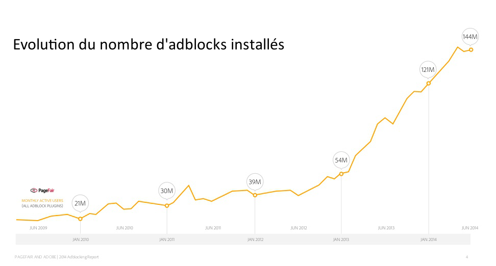

Une efficacité questionnée, mais réelle
Il semble facile de constater que la publicité sur internet ne rapporte en général pas suffisamment d’argent : pour ne donner qu’un seul exemple, le Washington Post a été racheté par Amazon au cours de l’année 2013, car ses ressources financières ne suffisaient plus à assurer le fonctionnement du site, et de l’entreprise en général. On entend parfois dire que la publicité sur le web ne constitue qu’une source de revenus secondaire.
Arnaud Aubron, président actuel de Courrier International, explique que la publicité sur Internet est vouée à être de moins en moins efficace. Il y voit deux raisons. Tout d'abord, contrairement au monde physique, internet fournit un espace infini ; il y a par conséquent peu de concurrence pour l'accès aux ressources publicitaires, ce entraine une baisse des prix. Ensuite, le ciblage étant de plus en plus précis, les éditeurs ne peuvent plus héberger sur leur site toute publicité.
En approfondissant les recherches, on réalise cependant que les à-priori sur l’inefficacité de la publicité sur le web ne sont pas complètement fondés. Trois exemples nous montrent que la publicité peut constituer une source de revenus suffisamment fiable. Premièrement, les revenus numériques du journal Le Monde proviennent pour la moitié de la publicité. Deuxièmement, le Figaro espère générer entre 1,5 et 2 millions d'euros de recettes publicitaires grâce à la vidéo instream selon Bertrand Gié, directeur des nouveaux médias du Figaro. Enfin, le Figaro décline en anglais son site lifestyle avec un modèle économique basé à 100% sur la publicité.
D’autre part, Google réalise à lui seul un chiffre d’affaire annuel de 1,5 milliard d’euros en France, principalement grâce à la publicité (l’équivalent de 10 avions Airbus A 380 !). On peut également noter que le journal Le Monde réalise deux fois plus de chiffre d'affaire par la publicité que par abonnement.
Les investissements publicitaires dans le secteur numérique sont en pleine croissance : 25% du total des dépenses publicitaires dans le monde en 2014, soit 140 milliards de dollars (+16.7% par rapport à 2013), d’après le cabinet eMarketer. D’après l’entreprise Criteo (pionnière en matière de publicité ciblée), la publicité est la source de financement principale des sites d’information.
Si cette croissance est plus lente en France (+ 4% en 2014), l’observatoire de l’e-pub publié en janvier 2015 par le Syndicat des régies Internet (SRI) et l’Udecam révèle que le quart des investissements publicitaires Français a été consacré au web en 2014, pour un total de 2,9 milliards d’euros. Matthieu Aubusson, associé chez PwC et co-auteur de cette dernière étude, est clair : « Il n’est pas absurde de penser que les investissements publicitaires en ligne dépasseront ceux de la télévision, peut-être dès cette année, sans doute en 2016 ».
La France accuse un certain retard en matière de basculement au numérique : Internet constitue déjà le premier média (devant la télévision !) au Royaume-Uni (37 % du marché), ou en Allemagne (32 %).
Cette étude révèle que deux axes de publicité sur le web sont en réelle croissance :
-
le «search» (liens sponsorisés) représente une large majorité du marché, avec 1,74 milliard d’euros d’investissements en 2014 (+4%)
-
le «display» (bannières, vidéo, etc.) présente la plus forte croissance (+8%, à 813 millions d’euros), malgré le désintérêt pour les bannières traditionnelles (– 6 %, à 512 millions d'euros). « On commence à observer un basculement des investissements du “desktop” vers le mobile, suivant la tendance plus ancienne du basculement des audiences », remarque Sébastien Leroyer, de PwC.
Au sein du display, trois segments s’avèrent particulièrement dynamiques :
- la publicité mobile (+ 77% entre 2013 et 2014, 407 millions d’euros en 2014)
- les réseaux sociaux, dont le poids est de plus en plus important : 7% des dépenses en ligne ont été attribuées aux réseaux sociaux en 2014. Le marché de la publicité sur les réseaux sociaux a progressé de 45% l’année dernière.
- la vidéo, dont le poids est maintenant 27,5% des investissements display, et dont le potentiel de croissance est encore grand.
Les fournisseurs d’accès à internet jouent un rôle pivot dans la diffusion de la publicité, sans en tirer de réels avantages. En effet, certains gros éditeurs de contenus utilisent leur réseau sans réellement rémunérer les fournisseurs d’accès alors qu’ils doivent sans cesse investir pour augmenter le débit fournit aux utilisateurs. Ils réclament donc depuis quelques temps que les éditeurs qui utilisent le plus leur réseaux les rémunèrent davantage. Ils peuvent alors s’opposer à la publicité sur Internet pour faire pression sur les grands éditeurs. En 2014, Free a donc décidé de bloquer la publicité afin de protester contre cette situation. En retour, les groupes d’éditeurs et Google firent pression, jusqu’à intervention de l’Etat pour demander à Free de ne pas immobiliser (voire supprimer) les ressources publicitaires proposées par Internet.
Si internet peut être une bonne source de financement pour certains sites, elle n'est pas la seule. Le financement participatif se développe ; et le système de l'abonnement (ou souscritpion) fait lui aussi ses preuves : Courrier International fait trois fois plus de chiffre d'affaire par l'abonnement que par la publicité.
Le problème des adblocks
L’utilisation massive d’adblocks par les utilisateurs entraîne une perte importante de ressources publicitaires, estimée entre 20 et 40% par Laure de Lataillade, directrice générale du GESTE (Groupement des éditeurs de sites en ligne). Pour faire face à ce mouvement, les éditeurs se regroupent (groupe GESTE), et font pression sur les pouvoir législatifs.

Cette lutte pour conserver les ressources publicitaires fournies par internet est particulièrement visible en Allemagne, où une action en justice a été menée très récemment (voir encadré). Après quatre mois de délibérations, la justice allemande a statué que l’utilisation d’AdBlockPlus n’était pas illégale. En effet, ne retenant pas les arguments d’entrave à la concurrence, les juges ont considéré que les utilisateurs devaient conserver le contrôle de leur écran et que dans ce cadre, AdBlock Plus était un outil parfaitement légal. Eyeo Gmbh, l’entreprise qui développe AdBlock Plus s’est bien entendu félicité de cette décision qui devrait constituer une référence juridique en Allemagne pour traiter des cas similaires. En France, le GESTE étudie les actions possibles, mais n’a pas encore entrepris d’action juridique à proprement parler.
Certains sites (comme l’equipe.fr) bloquent le contenu lorsque adblock activé, et affichent un texte indiquant au visiteur que le financement du site est réalisé grâce à la publicité.
Action en justice contre les Adblocks en Allemagne :
L’un des plus célèbres adblockers, Adblock Plus (ABP), n’applique pas d’algorithme de détection automatique pour supprimer la publicité de toutes les pages webs visitées par l’utilisateur. Le logiciel possède en effet une liste blanche d’annonceurs ayant passé un accord avec ABP afin que celui-ci ne bloque pas leur pub ; parmi eux on peut notamment citer Amazon, Google, Yahoo, Yandex. En échange, les annonceurs financent ABP et s’engagent à n’utiliser que des publicités dites non intrusives. Cette manière de fonctionner n’est pas appréciée de tout le monde ; en effet, les régies de plusieurs groupes de médias Allemands ont porté plainte contre Eyeo GmbH, l’éditeur d’ABP en juillet 2014. Ils lui reprochent notamment de ne pas respecter les lois de la concurrence. Pour eux ABP effectue une sélection dans les pubs qu’elle filtre en fonction du fait que les publicités viennent de partenaires ayant payé et cela même si la pub présente sur les sites non-partenaires n’est pas intrusive. Ce sera le tribunal de Munich qui tranchera la question de la concurrence dans le dossier, pour l’instant, les procédures sont en cours.
Transparence
Bien que le numérique soit soumis à une loi qui impose aux publicités d’avoir une certaine transparence, les espaces publicitaires sont parfois achetés par des agences médias puis revendus sans transparence sur les prix. Un bonne part du marché est concernée par ce phénomène. Une estimation a été faite au niveau européen sur ce phénomène : sur 100 euros dépensés par un annonceur, 40 euros vont aux médias et 60 euros aux intermédiaires, selon l’UDA (Union des Annonceurs) !
Ce phénomène est accentué par l’émergence du trading desk : un trading desk est, dans le domaine de la publicité Internet, un service d’une agence média qui prend en charge l’achat de l’espace publicitaire Internet.
Une solution au manque de transparence peut être assurée par les plateformes ad exchange. Un ad exchange est une plateforme automatisée de vente et d’achat d’espaces publicitaires sur laquelle se rencontrent les demandeurs d’espaces. Cette Plateforme permet de faire des transactions quasiment instantanées, ne durant pas plus de quelques minutes. Ces transactions se font en enchères. Le vendeur annonce un prix initial et peut aussi filtrer son annonce (domaine, type ....) les acheteurs surenchérissent puis intervient la plateforme ad exchange qui va comparer l’offre et la demande et désigner un vainqueur.
L'arrivée de ce type de commercialisation d'espace favorise deux choses : la transparence (l'enchérisseur sait combien et pour quoi il paye) et le gain de temps, avec l'automatisation des phases de négociation et d'implémentation des campagnes.
La question de la transparence est également soulevée par le financement participatif. Les journalistes craignent que les plateformes de financement participatif (tels que Patreon ou Google) puissent redistribuer l’argent arbitrairement, et en prélever une part conséquente, ce qui est pointé de doigt comme moralement contestable vis-à-vis des éditeurs de sites. En outre, en attribuant librement les sommes récoltées, les plateformes de crowdfunding peuvent décider de favoriser partialement certains sites particuliers, au détriment des autres.
Législation française
Une particularité de la législation française permet aussi de comprendre le succès de la publicité sur Internet : la publicité sur internet représente actuellement le seul segment du marché à ne pas être taxé d’une manière ou d’une autre en France.
Le projet d’imposer une taxe sur l’achat de la publicité en ligne a été examiné plusieurs fois, notamment à l’initiative du sénateur Philippe Marini, président de la commission des finances du Sénat. Ce projet a été refusé en 2011, puis reconsidéré en 2014 pour être de nouveau mis de côté. Ce nouveau rejet n’est pas définitif et pourrait être réexaminé par la suite.
Le projet, surnommé “taxe Google”, prévoyait une taxe dont le montant serait de 0,5 % jusqu'à 250 millions d'euros de campagnes facturées, puis de 1 % au-delà. Sont concernés les services de publicité en ligne fournis au moyen de moteurs de recherches, d'affichage de messages promotionnels, d'affiliation de liens, d'envois de courriels, de comparateurs de produits et de services en ligne sur téléphonie mobile.
Cette « Taxe Google » viserait ainsi les plus grandes régies publicitaires françaises et américaines. Google, qui réalise plus de 1,5 milliard de chiffre d'affaires par an en France principalement grâce à la publicité et profite ainsi très largement de la législation actuelle, ne serait pas épargné.
Quelques organisations en faveur de la publicité en ligne comme “Interactive Advertising Bureau” se réjouissent de la disparition annoncée de ce projet de taxe, qui constitue selon eux une réelle menace pour la préservation et le développement du modèle d’Internet reposant sur un principe redistributif de la publicité en ligne.